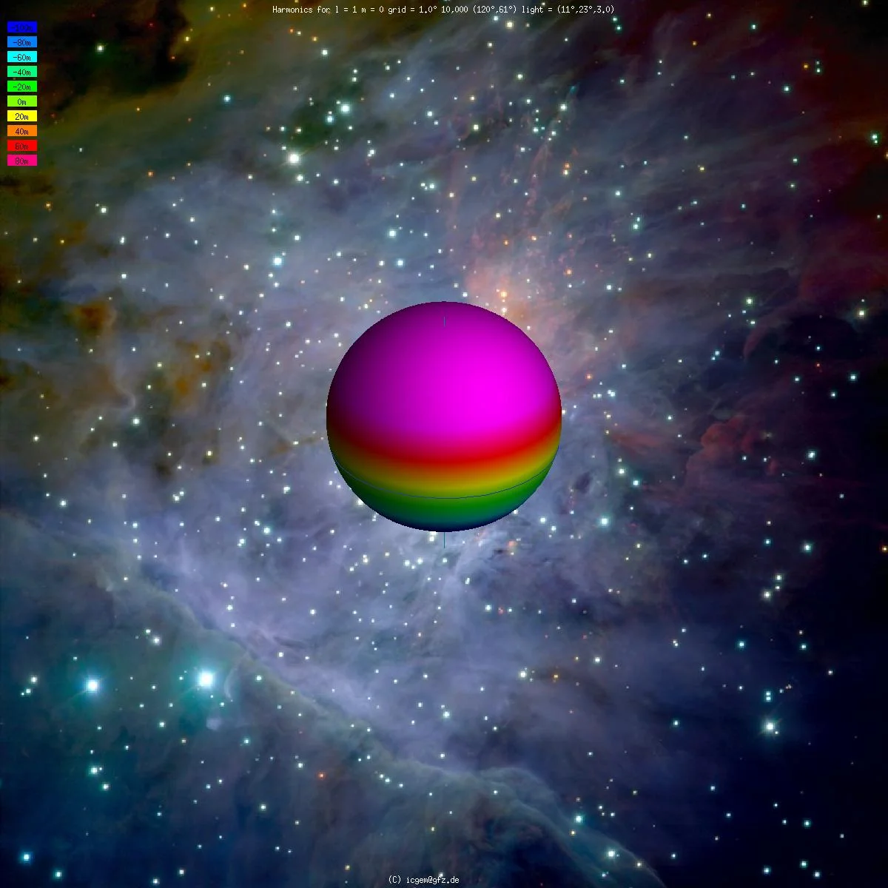
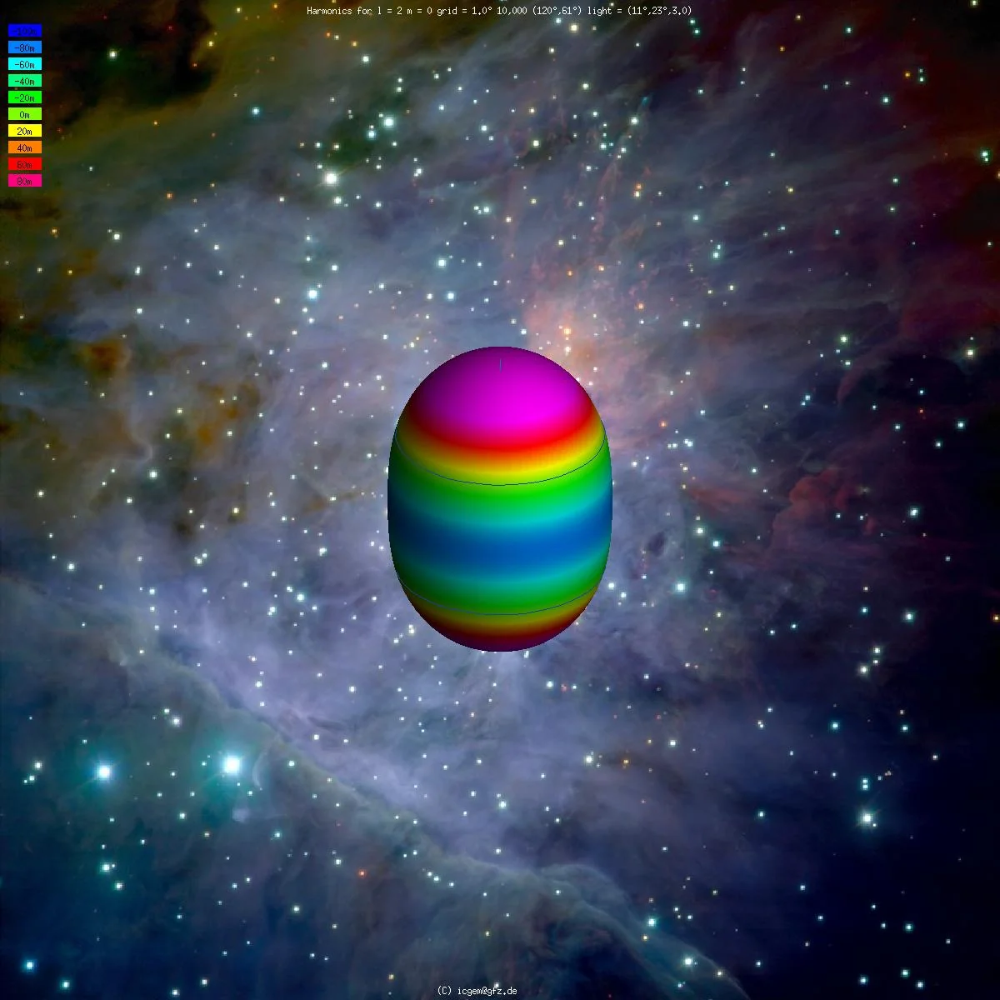
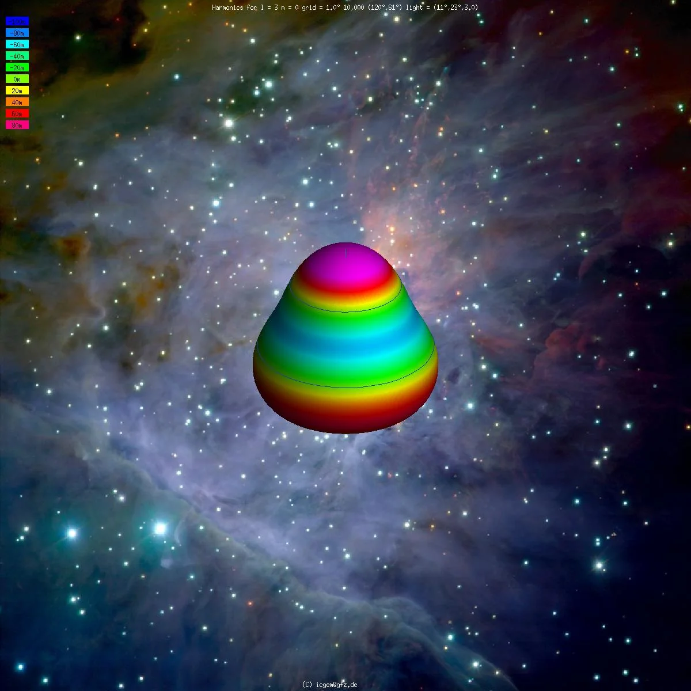

附录 ： The Math in 3D Gaussians
3D Gaussian 代数推导
从一维出发逐步推广到 d 维的高斯分布表达式。
一维
一维正态分布公式
我们将指数部分改写，让结构更清晰
逐项推广
| 一维 | d 维 | 解释 |
|---|---|---|
| \(x\) | \(\mathbf{x}\) | 标量 → 向量 |
| \(\mu\) | \(\boldsymbol{\mu}\) | 标量 → 向量 |
| \(\sigma^2\) | \(\Sigma\) | 方差 → 协方差矩阵 |
| \((\sigma^2)^{-1}\) | \(\Sigma^{-1}\) | 标量倒数 → 矩阵求逆 |
| 相乘 | \((\cdot)^{\top}\Sigma^{-1}(\cdot)\) | 标量乘法 → 二次型 |
| \(\frac{1}{\sigma\sqrt{2\pi}}\) | \(\frac{1}{(2\pi)^{d/2} \vert \Sigma \rvert ^{1/2}}\) | 归一化处理，保证\(\int \cdot = 1\) |
归一化的系数从何而来？
为使总体积分为 1 ，先积指数项。这里可以直接使用高斯积分的结论：
系数取倒数即可。
最终，我们得到高维正态分布（高斯分布）公式：
\(\mathbf{x}\) 服从高斯分布，记为：
3D Gaussian 表达式
3D Gaussian ≈ 三维高斯分布，但没有归一化系数。因为 3DGS 是为了在从中心向外的一定范围内，给空间点赋予权重，中心取1、向外衰减，而不是为了算概率密度。于是，我们得到 3DGS 的表达式：
👉实际上，指数就是所谓马氏距离的平方 \(\Delta^2 = (\mathbf{x}-\boldsymbol{\mu})^{\top}\Sigma^{-1}(\mathbf{x}-\boldsymbol{\mu})\) ，用来给空间分配恰当的权重。它修正了欧氏距离各个维度尺度不一致的问题。
3D Gaussian 几何形状
高维高斯分布一般描述的是椭球面，这是由公式性质造成的,我们可以把它转变成我们更熟悉的椭球形式。
考察水平集 \({\mathbf{x} : (\mathbf{x}-\boldsymbol{\mu})^{\top}\Sigma^{-1}(\mathbf{x}-\boldsymbol{\mu}) = c}\)
特征分解
由于\(\Sigma\) 对称且正定，因此可以将其特征分解：
于是
坐标变换
令 \(\mathbf{y} = Q^{\top}(\mathbf{x}-\boldsymbol{\mu})\)（旋转），则
方程形式
等值面变成 \(\sum_i \dfrac{y_i^2}{\lambda_i} = c\)，两边同除以 \(c\)：
这是 \(\mathbf{y}\) 坐标系内的标准椭球方程，半轴长度是 \(\sqrt{c\lambda_i}\)。
因为 \(\mathbf{y}\) 坐标是由 \(\mathbf{x}\) 坐标旋转得到的，因此在原坐标系中，这是一个被旋转过的椭球。
对应关系
| 几何量 | 代数量 |
|---|---|
| 椭球中心 | \(\boldsymbol{\mu}\) |
| 半轴方向 | \(Q\) 的列 / \(\Sigma\) 的特征向量 |
| 半轴长度 | \(\sqrt{c\lambda_i}\) = \(\sqrt{c}\cdot\sqrt{\textbf{特征值}}\) |
Spherical Harmonics
这里补充一下对球谐函数（Spherical harmonics）的介绍。
引入
在现实世界的物体，其颜色会随视角变化（如反射、金属高光等），仅仅使用 RGB 向量无法表达这种视角相关性，因此我们需要把颜色在 3D Gaussian 上表达为朝向的函数。
定义
SH 函数可以看作傅里叶级数在球面上的推广，它将一组球面上的基函数展开，其系数是 3DGS 优化时的可学习参数。
| 定义域 | 基函数 | 展开形式 | |
|---|---|---|---|
| 傅里叶级数 | 圆（\(\theta\)） | \(e^{ni\theta}\)/ \(\sin n \theta、\cos n \theta\) | \(f(\theta) = \sum_n c_n e^{ni\theta}\) |
| 球谐函数 | 球面 \((\theta,\phi)\) | \(Y_{l,m}(\theta, \phi)\) | \(f(\mathbf{d}) = \sum_{l,m} k_{l,m} Y_{l,m}(\mathbf{d})\) |
代数推导
拉普拉斯方程变换
在物理学中，很多场都满足拉普拉斯方程：
在球坐标系中，它被写作：
和场不同，球谐函数仅仅是方向的函数，而拉普拉斯方程包含了位置参数。为了得到球谐函数，我们需要进行参数化，将距离与方向分离。
设 \(f(r, \theta, \phi) = R(r) Y(\theta, \phi)\)。将其代入拉普拉斯方程，并将 \(R(r)\) 和 \(Y(\theta, \phi)\) 分离。两边同乘 \(\frac{r^2}{R(r)Y(\theta, \phi)}\)，得到：
由于第一项只与 \(r\) 有关，第二项只与 \(\theta, \phi\) 有关，两者相加等于 0。这意味着它们必须分别等于一个常数。为了后续求解方便，我们把这个常数设为 \(l(l+1)\)（\(l \in Z\)）：
- 径向部分等于 \(l(l+1)\)：
- 角度部分等于 \(-l(l+1)\)：
把等式左边的 \(Y\) 乘到右边，保留角度部分，我们得到一个偏微分方程。
解微分方程
为了解这个方程，我们再次使用分离变量法，把它化为多个常微分方程。设 \(Y(\theta, \phi) = \Theta(\theta) \Phi(\phi)\)，代入方程，两边同乘 \(\frac{\sin^2\theta}{\Theta\Phi}\)，整理得：
解 \(\phi\) （方位角）
上式中的 \(\frac{1}{\Phi}\frac{d^2\Phi}{d\phi^2}\) 只与 \(\phi\) 有关，其余部分只与 \(\theta\) 有关。因此它必须等于一个常数。设这个常数为 \(-m^2\)），于是有
这个常微分方程的通解为
👉 由于物理上 \(\phi\) 的周期是 \(2\pi\)（\(\Phi(\phi) = \Phi(\phi + 2\pi)\)），这要求 \(m\) 是整数。
解 \(\theta\)（天顶角）
把 \(-m^2\) 代回原式，两边同乘 \(\frac{\Theta}{\sin^2\theta}\)，得到 \(\Theta\) 的常微分方程：
对它做变量代换。令 \(x = \cos\theta\)，则 \(\sin\theta = \sqrt{1-x^2}\)，且 \(\frac{d}{d\theta} = -\sin\theta \frac{d}{dx}\)。代入上式，化简得到
这个形式被称作 勒让德方程，它在区间 \(x \in [-1, 1]\)（即 \(\theta \in [0, \pi]\)）上要有有限解。数学上，只有当 \(l\) 是非负整数，且 \(|m| \le l\) 时，方程才有物理上合理的有限解。
此时，方程的解被称为连带勒让德多项式，记作 \(P_l^m(x)\)。
将 \(\Theta(\theta)\) 和 \(\Phi(\phi)\) 的解组合起来，并加上归一化系数，就得到了最终的球谐函数：
应用
3D Gaussian 的颜色用球谐函数表示的公式为：
- \(\mathbf{d}=(\theta,\phi)\)：观察方向（单位向量），从高斯中心向外。
- \(l\)：阶（degree），\(0 \le l \le L\)，控制角频率（球谐函数在球面上的变化频率）。
- \(m\)： 阶内序号，\(m \in [-l,l]\)，每阶共 \(2l+1\) 个，表示在方位角 \(\phi\) 上的波动次数。
- \(Y_l^m(\cdot)\)：实值球谐基函数。
- \(a_{l,m}\)：可学习系数，在梯度下降中调优。
阶数的几何含义
| 阶 | 基函数个数 | 角频率 | 视觉现象 |
|---|---|---|---|
| \(l=0\) | 1 | 常数 | 漫反射（各向同性） |
| \(l=1\) | 3 | 线性 | 线性光影 |
| \(l=2\) | 5 | 二次 | 二次光影 |
| \(l=3\) | 7 | 三次 | 三次光影 |
👉 阶数 \(l\) 越高，角频率越高，能表达的颜色变化细节也更多，参数和计算量也相应增长。在 3DGS 的训练中，\(l_{max}\) 取 3。
|
 l = 1 |
 l = 2 |
 l = 3 |
这个网站提供了球谐函数的可视化。试试改变 \(l\) 和 \(m\) 的取值，观察几何图形的变化。